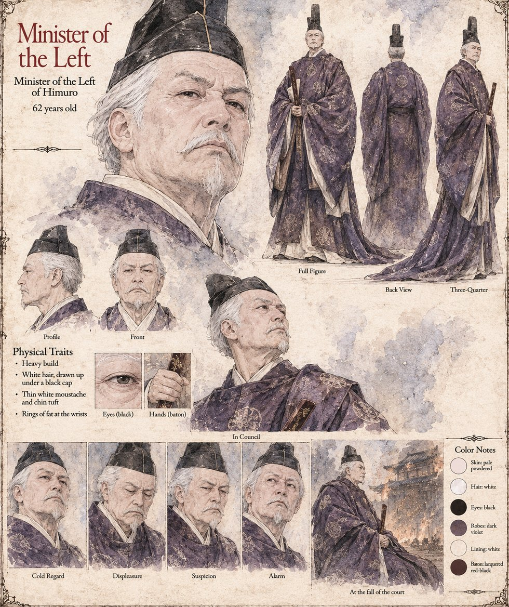

The Minister of the Left of Himuro
Minister of the Left in the court of Himuro · in mutual surveillance with the Minister of the Right · fell with the court · 62 by his sheet
The Minister of the Left in the court of Himuro, a realm of terraced river valleys and cold highland pastures that cuts its ice from the frozen Shirase. He stands across the throne from the Minister of the Right, the two of them in mutual surveillance, and he falls with the court in the Rising of the Northern Gate (Part One, The Persimmons on the Ledger). He appears in the manuscript only as an office.
The sheet draws him heavy at about 5 ft 7 in, with a wide heavy-jowled watchful face, white hair drawn up under a black court cap, a thin white moustache and chin tuft, shrewd black eyes, pale powdered skin and rings of fat at the wrists, in layered dark-violet silk with a white lining and a long trailing hem, holding a lacquered red-black baton. The age of 62 and the rest are the pack’s. Its panels are Cold Regard, Displeasure, Suspicion and Alarm; its scenes show him In Council and in the foreground before a burning hall, captioned At the fall of the court.
Case 2231 also has a Minister of the Left of Himuro, Arikuni, who is 66 at the opening of that case. The site keeps the two as separate pages: this sheet’s minister is unnamed, sixty-two and heavy, and nothing in the 3312 pack says he is the same man.